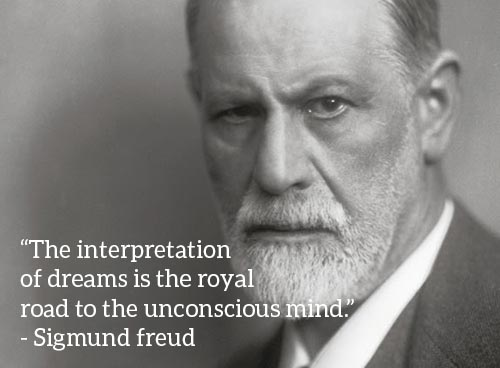

WHY DO WE DREAM?

Theories of Why We Dream
One very compelling scientist, Sigmund Freud, proposed in the early 1900s that dreams discharge repressed wishes through dream content that is a disguised form of our true desires. Although this is very difficult to disprove, it is also difficult to prove. Here are some of the other theories that are more provable biologically:
Activation Synthesis Model
- Dreams are simply the brain interpreting random electrical impulses that are produced during REM
- The brain cortex receives PGO Waves (bursts of electrical activity during REM) and it tries to make sense of it
Dreaming to Erase Memory
- Since we intake a lot of information in a day, the brain needs to free storage space up
- Dreaming is a meaningless byproduct of this process
REM Dreaming for Emotional Therapy
- Each memory is associated with an emotion
- Experiment: showed very emotionally arousing pictures to participants. Half of them slept and half of them stayed awake, and then used fMRI to scan brain activity.

Tips to Improve Dreaming
- This may sound obvious, but sleep more! You will spend more time in REM sleep.
- When you wake up, before you forget, write down what you remember from your dreams in a dream journal. You will find yourself remembering more and more of your dreams.
- Don't drink alcohol before you sleep! Studies have shown that the brain is deprived of REM sleep until it finishes metabolizing the alcohol in your system. Bad news for drinkers out there, but REM deficiency will also affect your overall memory.